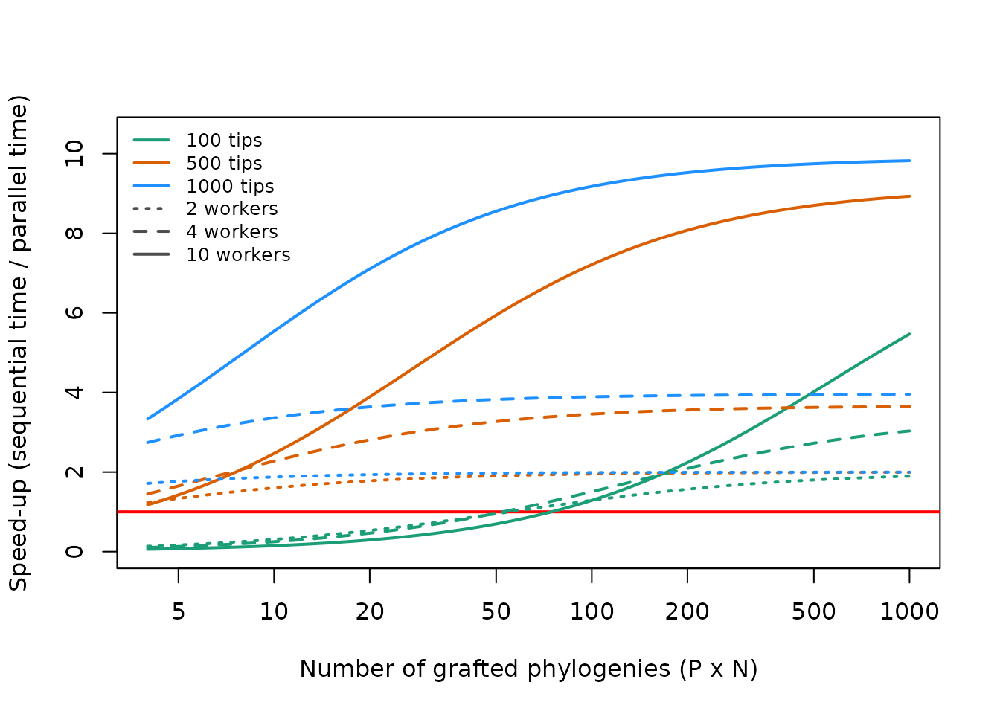

Run grafting in parallel
Maël Doré
2026-11-27
Source:vignettes/parallel_grafting.Rmd
parallel_grafting.RmdGrafting is stochastic, so a robust analysis may need many
grafted phylogenies: N simulations, eventually crossed with P
stochastic maps to apply attribute-based constraints (see
vignette("handle_uncertainty")). Each grafted phylogeny is
independent from the others, so they can be computed
at the same time on the different cores of your
computer, using a unique call to one of the grafting
functions.
This tutorial explains how to run the grafting in parallel, and when it is worth it. Parallel computation has a small cost (starting the workers, sending the data to them), so it is not always faster. We present the results of a benchmark to help you decide, with the expected gain depending on the size of the backbone phylogeny, the number of grafted phylogenies, and the number of workers.
Here, we cover:
- How to set up the parallel computation.
- What is run in parallel, and why the output is the same as without parallelization.
- The design of the benchmark, and the machine used.
- The results: from which number of grafted phylogenies is it worth it, and which speed-up to expect.
- Larger backbones (5,000 and 10,000 tips).
- The memory needed.
Everything below applies in the same way to all grafting functions:
graft_missing_taxa(), graft_missing_clades()
and graft_missing_taxa_and_clades().
1/ Set up the parallel computation
The parallel computation relies on the packages
future and
future.apply. They are not
installed with phylograftR, so you must install them first.
install.packages(c("future", "future.apply"))phylograftR does not manage the workers: you
set a computation plan before the grafting, and reset it
afterwards. The plan multisession starts separate R
sessions (the workers), and works on all systems.
# How many workers? You can use up to the number of physical cores of your computer, minus one or two to keep it responsive
parallel::detectCores(logical = FALSE)
# Set the plan: Here, 4 workers
future::plan(future::multisession, workers = 4)
future::nbrOfWorkers()
#> [1] 4
# Run the grafting as usual
# The argument 'parallel = NULL' (default) uses the plan if one is set
grafted_phylo <- graft_missing_taxa(phy = toy_backbone,
missing_taxa_list = toy_missing_taxa_list,
nb_simulations = 100,
seed = 1)
# Reset the plan when you are done, to free the workers
future::plan(future::sequential)The argument parallel controls how the plan is used:
-
parallel = NULL(default): the run is parallel if a plan with several workers is set, and sequential otherwise. -
parallel = FALSE: the plan is ignored, the run is sequential. -
parallel = TRUE: the plan is used, and the function stops iffutureis not installed or if no plan with several workers (i.e., with parallel computation) is set.
# No plan set: error
graft_missing_taxa(phy = toy_backbone, missing_taxa_list = toy_missing_taxa_list,
nb_simulations = 4, parallel = TRUE)
#> Error: 'parallel = TRUE' needs a 'future' plan with several workers, set before the call,
#> e.g., future::plan(future::multisession, workers = 4). Use 'parallel = FALSE' to run sequentially.Choosing the number of workers:
You can use up to the number of physical cores of your computer, minus one or two to keep your system responsive. Keep in mind that each worker is a full R session that needs its own memory, so memory usage multiplies roughly linearly with the number of workers set (see Section 6 for estimates of memory usage). There is also no point in having more workers than grafted phylogenies.
2/ What is run in parallel
Each grafted phylogeny is one independent
task: one simulation (one seed) for one stochastic map. With
P maps and nb_simulations = N, all the
P x N tasks are shared evenly across the
workers. There is no need to loop over the maps yourself.
# 10 stochastic maps x 5 simulations = 50 tasks, shared among the workers
future::plan(future::multisession, workers = 4)
grafted_phylo_par <- graft_missing_taxa(phy = toy_backbone,
missing_taxa_list = taxa_colors, # See `vignette("handle_uncertainty")`
simmap = toy_multiSimmap,
nb_simulations = 5,
seed = 1)
future::plan(future::sequential)The output is the same as in a sequential run
The seed system is not affected by the
parallelization: each grafted phylogeny uses its own seed, derived from
seed (see vignette("handle_uncertainty")). The
output is thus exactly the same with or without
parallelization, whatever the number of workers.
# Run the same example without a parallel plan = sequentially
grafted_phylo_seq <- graft_missing_taxa(phy = toy_backbone,
missing_taxa_list = taxa_colors,
simmap = toy_multiSimmap,
nb_simulations = 5,
seed = 1,
parallel = FALSE) # Ignore the plan
# Compare outputs
identical(grafted_phylo_seq, grafted_phylo_par)
#> [1] TRUEThe format and names of the outputs are the same too (here: a list of
10 multiPhylo named map_1, map_2,
…). Everything you learn in vignette("handle_uncertainty")
applies.
The only difference: messages and warnings raised in
the workers are relayed to your session once the tasks are
collected, so they appear after the run, not live. With
verbose = TRUE, one line is printed when each simulation is
done.
3/ Benchmark: design and machine
We benchmarked the computation time of the grafting, sequential and parallel, to find from which size of backbone and number of grafted phylogenies the parallelization pays off.
Machine: Intel Xeon W-2255 (3.7 GHz), 10 physical cores (20 threads).
Configurations:
- Backbones: random coalescent trees of 100, 500, 1000, 5,000 and 10,000 tips.
- Taxa to graft: as many as tips for 100, 500 and 1000 tips (e.g., 1000 taxa on a backbone of 1000 tips), which is a demanding case, as the time of a grafting depends mostly on the number of taxa to graft. For larger phylogenies, we used a more realistic scenario with 20% of the tips to graft for 5,000 and 10,000 tips (1,000 and 2,000 taxa).
- Taxa distribution: taxa spread over a few target clades, with a broken stick distribution of the number of taxa per clade (a few large groups of taxa, and many small ones, as in a taxonomy).
- Number of simulations: 10, 100 and 1000 simulations, without stochastic maps: the final number of grafted phylogenies equals the number of simulations.
-
Number of workers for parallelization: 2, 4 and 10
workers, with the plan
future::multisession. The times include the set-up of the workers, as when you set the plan just before the grafting.
Method: the benchmark uses the default method,
"BD_clades", without stochastic maps for attribute-based
constraints. The method "uniform" has no birth-death model
to fit, yet it gave similar times (within about 10%
from 500 tips). The birth-death models in "BD_clades" are
fitted only once per target clade, which is usually negligible. However,
"BD_clades" can be about 25% to 50% slower than
"uniform" when using large clades as
target clades (hundreds of tips). For the effect of the use of
stochastic maps as attribute-based constraints, please see the
last subsection of the Results in Section 4.
Fixed costs and time of one task
Setting up the workers, loading phylograftR in each of them, and sending the data has a fixed cost, paid once per plan. It increases with the number of workers:
| Workers | Set-up time |
|---|---|
| 2 | about 14 s |
| 4 | about 18 s |
| 10 | about 32 s |
Keep the plan set across several grafting calls to pay this cost only once.
The time of one task, i.e., one grafted phylogeny, grows with the size of the backbone and the number of taxa to graft:
| Backbone | Taxa to graft | One grafted phylogeny (sequential) |
|---|---|---|
| 100 tips | 100 | 0.5 s |
| 500 tips | 500 | 11 s |
| 1000 tips | 1000 | 41 s |
| 5,000 tips | 1,000 | 3 min |
| 10,000 tips | 2,000 | 13 min |
4/ Results: when does parallel pay off?
Benchmark results
The table gives the time of the runs for all combinations of backbone
and number of simulations (N), sequential and with 2, 4 and
10 workers, with the speed-up in brackets (sequential
time / parallel time). A speed-up below 1 means that the parallel run is
slower.
| Backbone | Taxa to graft | Simulations (N) | Sequential | 2 workers | 4 workers | 10 workers |
|---|---|---|---|---|---|---|
| 100 tips | 100 | 10 | 5 s | 19 s (x0.3) | 23 s (x0.2) | 33 s (x0.1) |
| 100 tips | 100 | 100 | 49 s | 41 s (x1.2) | 32 s (x1.5) | 38 s (x1.3) |
| 100 tips | 100 | 1000 | 8.7 min | 4.5 min (x1.9) | 2.9 min (x3.0) | 90 s (x5.5) |
| 500 tips | 500 | 10 | 1.8 min | 1.1 min (x1.6) | 53 s (x2.0) | 44 s (x2.5) |
| 500 tips | 500 | 100 | 18 min | 9 min (x2.0) | 5 min (x3.5) | 3 min (x7.2) |
| 500 tips | 500 | 1000 | 3.0 h | 1.5 h (x2.0) | 50 min (x3.6) | 20 min (x8.9) |
| 1,000 tips | 1,000 | 10 | 6.8 min | 3.4 min (x2.0) | 2.4 min (x2.9) | 73 s (x5.5) |
| 1,000 tips | 1,000 | 100 | 1.1 h | 34 min (x2.0) | 17 min (x3.9) | 7 min (x9.2) |
| 1,000 tips | 1,000 | 1000 | 11.3 h | 5.6 h (x2.0) | 2.9 h (x4.0) | 1.1 h (x9.8) |
| 5,000 tips | 1,000 | 10 | 33 min | 17 min (x2.0) | 10 min (x3.2) | 4 min (x8.5) |
| 5,000 tips | 1,000 | 100 | 5.6 h | 2.8 h (x2.0) | 1.4 h (x3.9) | 34 min (x9.7) |
| 5,000 tips | 1,000 | 1000 | 2 days | 27.8 h (x2.0) | 14.0 h (x4.0) | 5.6 h (x9.9) |
| 10,000 tips | 2,000 | 10 | 2.2 h | 1.1 h (x2.0) | 40 min (x3.3) | 14 min (x9.5) |
| 10,000 tips | 2,000 | 100 | 21.9 h | 11.0 h (x2.0) | 5.5 h (x4.0) | 2.2 h (x9.9) |
| 10,000 tips | 2,000 | 1000 | 9 days | 5 days (x2.0) | 2 days (x4.0) | 22.2 h (x9.9) |
Three things stand out:
- On a small backbone (100 tips) with few simulations, the parallel run is slower: the set-up of the workers takes more time than the sequential run.
- From 500 tips, the gain is clear even with 10 simulations: about x2 with 2 workers and x2 to x3 with 4 workers.
- When each grafted phylogeny takes 10 seconds or more, the gain is close to the number of workers.
Expected gain
We model the expected gain from the results of the benchmark,
accounting for the fixed cost of setting up the
workers, which increases with the number of workers, and the
time of one task. The figure shows the expected
speed-up as a function of the number of grafted phylogenies
(P x N), for 2, 4 and 10 workers. The plain red line stands
at X1 (even time cost for sequential and parallel computing), thus all
cases above this line are cases when parallel computation offers
a gain.

From which number of grafted phylogenies is it worth it?
The take-home messages are:
- Small backbones (about 100 tips or less, or few taxa to graft): a grafted phylogeny is fast, so the parallelization only pays off for hundreds of grafted phylogenies. Under 50 grafted phylogenies, do not bother.
- Backbones of 500 tips or more: it pays off from about 10 grafted phylogenies. Use it by default.
- When the backbone phylogeny and/or the numebr of tips to graft are large, and the run lasts several minutes or more, the expected gain is about the number of workers (x2 with 2 workers, x3.5 to x4 with 4 workers, up to x9 or x10 with 10 workers). Below that, the fixed cost of setting up the workers limits the gain.
As a rule of thumb: use parallel computation when the sequential run would last more than a minute or two. You can get an estimate by timing one grafted phylogeny:
# Time of one grafted phylogeny (sequential), including the preparation of the grafting
time_one <- system.time(graft_missing_taxa(phy = my_backbone,
missing_taxa_list = my_missing_taxa_list,
simmap = my_simmap[[1]], # Optional: a single map
nb_simulations = 1, seed = 1,
parallel = FALSE))["elapsed"]
# Expected sequential time of the full run, in minutes
time_one * P * N / 60With stochastic maps
The benchmark above grafts the taxa without stochastic maps. With a simmap, each grafted phylogeny takes roughly 10% to 30% longer, as the states of the branches must be tracked and matched with the allowed states of each taxon. The gain from parallel computation and the rules of thumb are therefore about the same: multiply the times of the tables by about 1.2.
One exception: with "BD_clades", the time can be
several times longer when the allowed states leave only
a narrow part of the time window with available
branches. The divergence ages drawn from the birth-death model then
often fall where no branch is in an allowed state, and have to be
redrawn, again and again (see
max_age_redraws). The time then varies a lot among
simulations (up to x10 longer when the number of draws needed is close
to 1,000). It can affect the overall time needed, but this time cost
applies only for maps that have a small portion of valid branches
available (min_valid_fraction). You can inspect if such
issue, and for which maps, is likely to arrive beforehand using the
check_grafting_plan() function.
5/ Larger backbones (5,000 and 10,000 tips)
Backbones of thousands of tips are realistic for phylograftR, but then it is unlikely that the number of taxa to graft equals the number of tips. The cost of a grafting depends much more on the number of taxa to graft than on the number of tips: on a backbone of 1000 tips, grafting 100, 250, 500 and 1000 taxa takes about 7%, 19%, 40% and 100% of the time needed for 1000 taxa, so the time grows slightly faster than linearly with the number of taxa.
We therefore benchmarked backbones of 5,000 and 10,000 tips with 20% of missing taxa (1,000 and 2,000 taxa): see the latest rows of the table in Section 4.
At this scale, parallel computation is not optional. A single grafted phylogeny takes about 3 minutes (5,000 tips) to about 13 minutes (10,000 tips), so a set of 100 grafted phylogenies would last about 5 hours to about 22 hours sequentially. The fixed cost of setting up the workers is negligible, and the speed-up is close to the number of workers.
6/ Memory needed
Each worker is a separate R session, with its own
copy of the backbone and of the objects needed for the grafting. The
memory used is therefore about
(1 + number of workers) times the memory of one R
session running one grafting. The table gives the
approximate peak memory of all the R sessions:
| Run | 100 to 1000 tips | 5,000 tips | 10,000 tips |
|---|---|---|---|
| Sequential | 0.3 GB | 0.3 GB | 0.7 GB |
| 2 workers | 0.8 GB | 0.9 GB | 1.5 GB |
| 4 workers | 1.4 GB | 1.5 GB | 2.5 GB |
| 10 workers | 3 GB | 3.5 GB | 5.5 GB |
The grafted phylogenies themselves are small (0.06 MB for 100 tips, 0.6 MB for 1000 tips with as many taxa grafted), so sets of 1000 grafted phylogenies add less than 1 GB in your main session.
Memory is thus not a limiting factor on a recent
computer. If you are short of memory, check the memory of a
single grafting (run one simulation sequentially and look at the memory
used by the R session in the task manager of your system), make sure
that (1 + workers) x this value fits in your RAM, and
reduce the number of workers if needed: the speed-up
decreases, but the run completes.
Next steps
- Understand how to account for the uncertainty with
N simulations and P maps, and to handle the outputs: see
vignette("handle_uncertainty"). -
Resume a crashed or interrupted run: see
vignette("resume_run"). - Choose the method and the options of the grafting:
see
vignette("graft_missing_taxa")andvignette("graft_missing_clades").